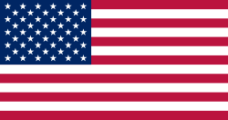
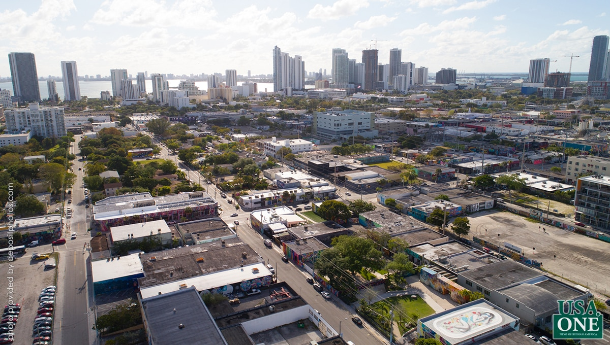
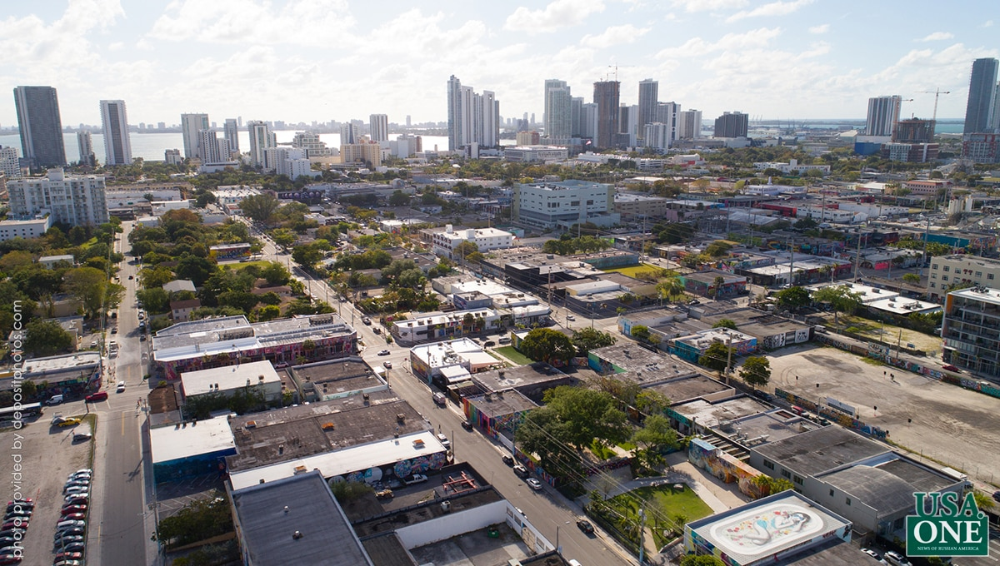

США
Тип:
Страна
Время:
1776-...
США
Соединённые Штаты Америки (англ. The United States of America [ði juˌnaɪtɪd ˌsteɪts əv əˈmerɪkə]), сокращённо США (англ. USA), или Соединённые Шта́ты (англ. United States, U.S., в просторечии — Аме́рика) — государство в Северной Америке. Площадь — 9,5 млн км² (4-е место в мире). Население — около 329 млн человек (2020, оценка; 3-е место в мире). США имеют федеративную форму устройства, административно делятся на 50 штатов и федеральный округ Колумбия; в их подчинении также находится ряд островных территорий (Пуэрто-Рико, Виргинские Острова, Гуам и другие). Столица — город Вашингтон (округ Колумбия), а самым крупным по численности населения является город Нью-Йорк. Соединённые Штаты граничат на севере с Канадой, на юге — с Мексикой, также имеют морскую границу с Россией на западе. Омываются Тихим океаном с запада, Атлантическим океаном — с востока и Северным Ледовитым океаном — с севера. Соединённые Штаты Америки были образованы в 1776 году при объединении тринадцати британских колоний, объявивших о своей независимости. Война за независимость продолжалась до 1783 года и окончилась победой колонистов. В 1787 году была принята Конституция США, а в 1791 — Билль о правах, который существенно ограничил полномочия правительства в отношении граждан. В 1861 году противоречия между рабовладельческими южными и промышленными северными штатами привели к началу четырёхлетней Гражданской войны. Следствием победы северных штатов стал повсеместный запрет рабства, а также восстановление страны после раскола, возникшего при объединении южных штатов в Конфедерацию и объявлении ими независимости. Вплоть до Первой мировой войны внешнеполитическая активность США ограничивалась интересами на территориях Северной, Центральной и Южной Америки — согласно сформулированной ещё в 1823 году доктрине Монро. После Первой мировой войны Конгресс Соединённых Штатов не давал согласия на вступление страны в международные организации (например, в Лигу Наций и Палату международного правосудия при ней), что ограничивало роль США в мировой политике. Однако участие страны в антигитлеровской коалиции значительно усилило влияние США на мировой арене, и со второй половины XX века страна стала ядром капиталистического лагеря. В 1945 году США стали первой ядерной державой и первой и единственной страной, использовавшей ядерное оружие в военных действиях (атомные бомбардировки Хиросимы и Нагасаки), а с 1946 года они находились в состоянии глобального противостояния с СССР, длившегося до начала 1990-х годов, когда Советский Союз прекратил своё существование. США располагают вооружёнными силами, имеет самый мощный ядерный потенциал на планете по совокупной численности развёрнутых боезарядов, но второе место после России по общему количеству ядерных боезарядов, в том числе самыми крупными в мире военно-морскими силами; имеют постоянное место в Совете Безопасности ООН с правом вето; являются государством-учредителем Североатлантического Альянса (НАТО), одними из основателей Организации Объединённых Наций, Всемирного банка, Международного валютного фонда, Организации американских государств (ОАГ) и других международных организаций. Соединённые Штаты — высокоразвитая страна, обладающая первой экономикой мира по номинальному ВВП и второй по ВВП (ППС). Хотя население страны составляет лишь 4,3 % от общемирового[9], американцам принадлежит около 40 % совокупного мирового богатства. Соединённые Штаты занимают лидирующие позиции в мире по ряду социально-экономических показателей, включая среднюю зарплату, ИЧР, ВВП на душу населения и производительность труда. В то время как экономика США является постиндустриальной, характеризуется преобладанием сферы услуг и экономики знаний, производственный сектор страны остаётся вторым по величине в мире. Экономика страны составляет около четверти мирового ВВП и производит треть глобальных военных расходов, что делает США главной экономической и военной державой планеты. Кроме того, США имеют наибольшее политическое и культурное влияние в мире, а также являются лидером в сфере научных исследований и технологических инноваций и в настоящее время считаются единственной сверхдержавой планеты.

 

Источники:
wikipedia.org;